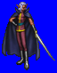
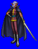
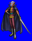
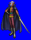

Height: 1.5 - 2 meters Weight: 80-150 lbs.
Habitat: Underground Origin: Northern Europe
Meaning: "Dark elf"
Derived from the elves, fairy spirits of Northern Europe. Unlike the typical form passed down in folktales, the dark elf has jet-black hair, crimson eyes that burn to the core, and more sharply pointed ears. Dark elves are warlike, and very proud of the attack magic they possess. Elves and humans are often at odds, so many wars break out between forces of the two species.
See also: Elf